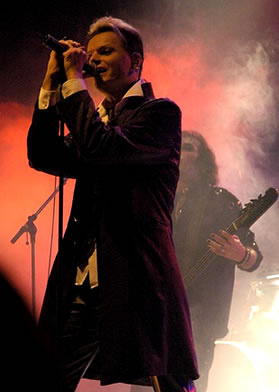

Entrevista
de Tilo Wolff à Imprensa Croata - 2007
Como têm
sido a recepção ao lançamento de Lichtjahre
nesta turnê? Vocês têm exibido trechos dos
vídeos antes dos show, certo?
Eu não tenho palavras para agradecer suficientemente
nosso público. Eu sei que acaba sendo meio clichê,
pois toda banda diz isso. Mas nossas fãs são incomparáveis.
Temos de levar em consideração que a maioria das
pessoas não entende as letras, mesmo aquelas com um alemão
razoável, existe sempre duplas ou triplas interpretações
para nossas letras e nossa forma de expressar a melodia do Lacrimosa.
Vocês
têm tocado quase todas as músicas do Lichtgestalt
ao vivo, não?
Isso pode variar de show para show. Tocar o mesmo set list toda
a noite pode ficar meio estressante e até mesmo enfadonho.
Mas quando temos um material que funciona tão bem ao
vivo, é impossível não fazer o máximo
de uso delas.
Podemos
afirmar que você perdeu um pouco o preconceito contra
festivais? Há várias datas marcadas para o Lacrimosa
em festivais em sua agenda.
Não é exatamente preconceito.
Tivemos sérios problemas com equipamentos mal equalizados;
falta de tempo hábil para passagem de som. E consideremos
que nossa música não é Punk Rock que pode
ser tocado de qualquer jeito em qualquer lugar e em qualquer
hora. Quando tocamos em teatros, a coisa é diferente
pois os nossos roadies são fantásticos e sabem
exatamente o que queremos e como queremos. Em festivais, raramente
somos considerados prioridade. Não quero regalias, porém,
exijo respeito e profissionalismo daqueles que nos contratam
pois sempre damos o melhor de nós em cima do palco. Faça
sol ou faça chuva.
Vocês
têm exibido o Konzert-Dokumentation und das Live-Album
Lichtjahre antes dos shows. Como têm sido a recepção
dos fãs a este trabalho?
Magnífico! As vezes fico dando umas espiadelas na platéia
e fico emocionado. As pessoas realmente entendem do que se trata.
É Ótimo. É gratificante quando tudo aquilo
que pensamos no estúdio, no período pré-estúdio,
ou quando componho em turnê, ver os fãs realmente
sendo introduzidos naquilo que pensei como música, como
arte. Mas principalmente, como compreensão do sentimento
e comportamento humano.
A música
do Lacrimosa ficou menos depressiva através dos anos
não? Se compararmos com os primeiros discos.
Respeito sua opinião mas não concordo.
É como ler más notícias nos jornais e não
sermos afetados por elas. Não vivemos tempos de paz.
Nem aqui na Europa nem em lugar nenhum. Sou afetado por tudo
aquilo que leio, sinto e ouço. Apenas mudei a forma de
abordar tais aspectos. Sinto que posso expressar esse sentimento
universal de desesperança, medo e reclusão de
outras formas. Mas sempre houve um fio de esperança em
nossa música, em nossa mensagem.
Como enxerga religião hoje
em dia? Se acha uma pessoa religiosa?
Não sou religioso. Não mais, mas tenho uma fé
profunda. Fui criado na religião mas agora, é
política pura hoje em dia, nada mais. A minha visão
de fé hoje é completamente diferente do que era
alguns anos atrás. Mas cantei num coral de igreja e isso
era maravilhoso para mim. Pena que aquilo tudo parece ter se
perdido na política.
A faixa Hohelied der Liebe é
um trecho da bíblia não é?
Sim. Algo especial para mim. A bíblia é um dos
meus livros favoritos. Talvez o favorito de todos. A bíblia
tem uma excepcional influência nas letras da banda.
Observação: Como sempre,
Tilo torna-se quase monossilábico quando tocamos no assunto
religião; num passado não tão distante
ele teria feito comentários considerados anti-semitas,
algo que nunca foi provado nem confirmado por ele.
Como explica
o sucesso do Lacrimosa fora da Europa?
Não procuro explicação para isso. É
ignorância sobre certos aspectos. Ouvi de um jornalista
na Bulgária: Como você lida com os latinos?
Eles são muito emocionais e bem pouco racionais não
é verdade? Recebo isto como uma ofensa. Terrível
que no século XXI ainda tenhamos gente que pensa desta
forma estúpida e irresponsável. E justamente de
povos aqui do leste europeu que ainda sofre com tanta discriminação
da Europa Ocidental.
O que é racionalidade no ponto
de vista dele? Acho que povos de origem latinas como hispânicos,
espanhóis, italianos e franceses têm mais facilidade
em expressar e lidar com seus sentimentos. Eles não têm
rédeas controlando suas emoções o tempo
todo. Acho isso mágico. Quando estivemos no Brasil e
no Chile pela primeira vez, tive uma sensação
estranha; a reação e comportamento deles era muito
parecida com a que recebemos na Alemanha ou na Escandinávia.
A participação deles também
era muito intensa nos shows, mas muito mais parecida com as
nossas. Estava acostumado a ver a reação maravilhosamente
insana em DVD's de outras bandas e achei que teria o mesmo,
mas eles nos surpreenderam de outras forma: cantando todas as
nossas músicas num alemão excelente e bastante
sentimental. Mesmo que não entendessem tudo o que era
dito, uma maneira quase espiritual de se comunicar conosco.
Gosto dessa diversificação de aspectos sentimentais
em relação ao Lacrimosa. Nossa arte não
foi e não é feita em vão.
Como lida com os boatos de que
Anne poderia deixar o Lacrimosa e seguir carreira solo?
Acho que o Lacrimosa é a carreira solo dela. Ela têm
liberdade para exercer toda a maravilhosa criatividade dela
dentro desta banda. Anne não é tão chegada
a entrevistas, mas eu também não sou. É
muito complicado ter de explicar cada mínimo detalhe
de um disco para um jornalista ignorante que foi destacado para
sua revista sem ter ao menos a menor noção de
como funciona e o que significa nossa música. Mas isso
não é culpa deles e sim de seus editores-chefe
não é mesmo?
Anne não vai deixar o Lacrimosa
porquê o Lacrimosa é a vida dela, assim como é
a minha. A gravidez da Anne na época levou idiotas a
publicar coisas estúpidas como estas.
E o Snakeskin? Como fica
nesse jogo?
Tenho composto material mas não tenho me sentido muito
a vontade com esse material. Preciso burilar ele melhor, descobrir
seus pontos fracos e transformá-los em pontos fortes.
É mais pesado e inconsequente do que o trabalho regular
do Lacrimosa. Tenho sentimentos confusos em relação
ao Snakeskin para dizer a verdade. Mas o Canta-tronic
têm sido uma grata surpresa devo dizer.
O que têm ouvido recentemente?
Tenho ouvido bastante nossos próprios discos. Isso não
é algo que faço com muita frequência. Aliás,
nunca tinha ouvido tanto, testado tanto meu trabalho. Acho que
é um recall. Uma forma de redescobrir pérolas
que ficaram pelo caminho e recuperá-las. Acho que por
bastante tempo acabei relegando boas músicas nossas para
um segundo ou terceiro plano. É hora de redescobrí-las
e encará-las de frente para o prosseguimento do Lacrimosa.
O metal voltou ao Lacrimosa recentemente
não?
Ele nunca esteve de fora. Mais uma vez é a nossa abordagem
musical que acaba passando despercebida do modo que ele é
tratado normalmente. O metal tradicional jamais me atraiu: bandas
como Helloween, Grave Digger entre outras
do típico metal alemão...
Mas
o Rammstein não é hoje o típico
metal alemão?
Acho que não. Acho que não. Tenho certeza que
não. Gosto bastante do Mutter e acho ótimas
canções também no Reise, mas não
identifico muito do Lacrimosa na banda de Till Lindemann. Mas
acho-o um grande performer. Um grande artista e também
seus companheiros.
Gostaria de ter sua opinião, seu parecer sobre bandas
que citam o Lacrimosa como grande influência. Pode ser?
Claro! Por que não? (risos)
Birthday Massacre
Não tenho uma opinião formada sobre eles. Mas
é bom saber que tantas bandas citam o Lacrimosa como
influência. É como um pagamento por algo impossível
de ser pago. Gratificante. Mas voltando ao BM, não conheço
o suficiente para ter uma opinião formada sobre a banda.
Infelizmente, quem sabe no futuro não os ouça
mais atentamente.
Evanescence
É a minha favorita entre aquelas que nos citam como influência.
Gosto da abordagem de Amy Lee. Sei que ela teve momentos muito
difíceis recentemente e passou isso para sua música
de forma brilhante. Conseguiu desabafar sem ser piegas. Ela
é muito talentosa embora digam que ela seja mera produção
do mainstream americano para combater o Gothic Metal
europeu. O que não é mentira, mas ela consegue
superar isso muito bem e mostrar todo o seu talento. Gosto particularmente
da melodia vampiresca do The Open Door.
Lacuna
Coil
Não vejo nada do Lacrimosa no Lacuna Coil. Absolutamente
nada.
Epica
Tampouco. A abordagem é diferente. Não basta usar
música clássica e orquestrações
para soar idêntico. Acho o Epica uma banda de grande valor
e que têm um futuro brilhante pela frente. Simone têm
uma voz deslumbrante e que muitas vezes me lembra Anne na interpretação
melancólica quando executa canções desesperadoras.
É convincente.
O que acha de bandas como o Lacuna
Coil e H.I.M que adaptaram seu som para conquistar
o mercado americano?
Difícil opinar sobre isso sem parecer
crítico. Não sou de fugir de debates mas esse
é muito complicado. Até onde podemos afirmar que
eles se venderam para os Estados Unidos e naufragaram?
Bem... Os fãs europeus e
de longa data detestaram seus trabalhos recentes: Dark Light
e Karmacode.
Eu não sei. Não tenho uma opinião
formada sobre isso. O U2 adaptou seu som à América
e funcionou. Isso sem ter resultados prejudiciais ao resto de
seus fãs.
O Lacrimosa sentaria para ouvir uma proposta de uma gravadora
para brilhar nos Estados Unidos?
Jamais. Fora de cogitação.
O que podemos esperar dos novos
trabalhos do Lacrimosa?
Muita disposição em criar novos e grandes trabalhos.
Poucas vezes estive tão animado com o andamento de processos
de gravação. Devemos tirar um pequeno descanso
de não mais que dois meses e voltaremos ao estúdio
com boa parte da pré-produção já
finalizada. Não há sobras de estúdios de
trabalhos anteriores. Não acho que o novo trabalho, pelo
menos até o que compomos até agora seja parecido
com qualquer coisa que já tenhamos feito no passado.
Isso é um clichê não
é?
(gargalhadas de Tilo) Pode ser. (Mais risos)
Que tipo de reação
de um fã te irrita? Qual você considera desrespeitosa?
Nunca tivemos problemas com isso. Fomos agraciados com amigos
e fãs maravilhosos por toda a carreira da banda. Os fãs
jamais foram inconvenientes ou incompreensíveis conosco.
Mesmo quando tivemos de adiar shows por problemas de saúde,
ou algum concerto que por razões técnicas ficou
aquém do esperado.
Mas houve um episódio bastante engraçado
quando um casal de fãs de Gotemburgo na Suécia,
nos entregou um Demo CD contendo canções deles
que em suas opiniões, encaixavam-se perfeitamente no
estilo Lacrimosa. Achei interessantíssimo o som do casal
e aconselhei que eles enviassem a demo para a Hall of Sermon.
Porém, esta demo jamais chegou em minhas mãos
e nunca mais tive notícias deles.
Que estranho!
(risos) Coisas estranhas sempre acontecem no Lacrimosa. Mas
se aparecer, certamente eles teriam grandes chances de obter
um contrato para gravação de um disco. Eram bem
talentosos.
Como os músicos de apoio da banda, lidam com uma certa
obscuridade deles em relação à Anne e você
? Vocês são a imagem do Lacrimosa.
São músicos profissionais que só se importam
com a música. Não há vaidade nenhuma. O
Lacrimosa não é um outdoor ambulante nem de imagens
nem de modelos. Só a música interessa.
Extraída
de mortesubita.org